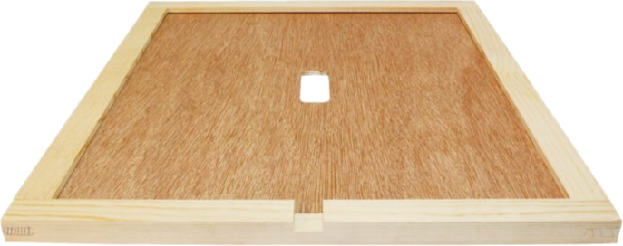

Overview

Typical Langstroth Hive Parts
The inner cover was initially introduced to help ensure the telescoping cover could be removed. If there were no inner cover, the bees would surely seal the telescoping cover down with propolis, and it would be unremovable.
It has evolved since then to also provide an upper entrance for the bees.
Usage Notes

Inner Cover
If you do not use a quilt box in the Winter, put the inner cover's bee entrance down (the bee entrance is the slot shown in the picture to the left). This makes it easy for the bees to take cleansing flights if there is a weather break. It also helps with ventilation.
Otherwise, put the inner cover's bee entrance up. This helps reduce the opportunities for robbing: any robbers would have to enter and come across the inner cover to the opening before going down into the hive. The colony will use this opportunity to stop the robbers.